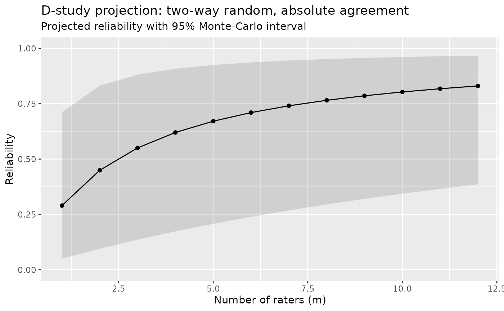
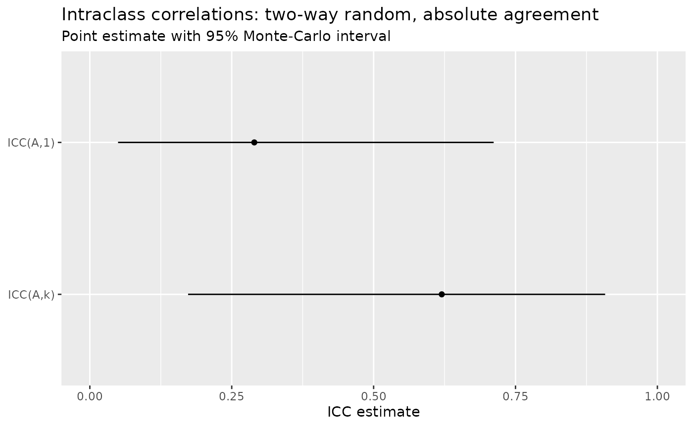
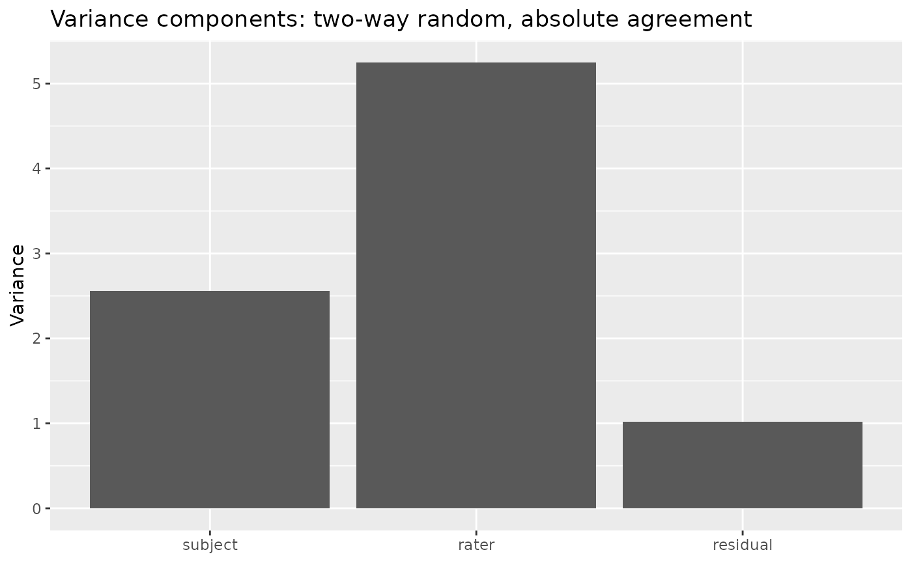
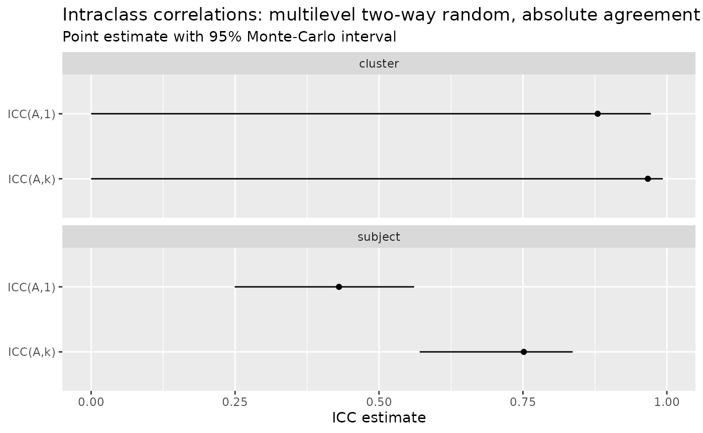

Beyond the balanced case
This article covers where the mixed-model approach earns its keep:
- D-studies — projecting reliability to other numbers of raters (below).
- Multilevel ICCs — subject-level vs. cluster-level coefficients, crossed and nested, complete and incomplete.
-
Visualizing a fit — the
autoplot()forest and variance-component plots. - Engine choice — the mixed-model default (glmmTMB / lme4) vs. the SEM (lavaan) engine, and when the distinction matters.
-
Letting the package choose —
choose_icc(), the decision tree as code.
Incomplete and imbalanced designs are already supported; the Choosing an ICC article works
through a connected incomplete design, the effective number of raters
k_eff, and why fixed and random raters diverge once cells
are missing.
How many raters do I need? A D-study
ICC(*,1) is the reliability of a single rater
and ICC(*,k) the reliability of the mean of the
k raters you actually used. A decision (D-)
study asks a forward-looking question: how reliable would
the mean of some other number of raters m be? In
generalizability theory the absolute-agreement ICC is the dependability
coefficient, and projecting it to m raters is just a change
of the averaging divisor,
so d_study() reuses the fit you already have — no
refitting.
library(intraclass)
fit <- icc(ratings, score, subject, rater, seed = 1)
proj <- d_study(fit, m = 1:8)
proj
#> # D-study projection: two-way random, absolute agreement
#> Observed raters: 4 | CI: 95% montecarlo (10000 draws)
#> m estimate 95% CI
#> 1 0.290 [0.050, 0.712]
#> 2 0.449 [0.095, 0.831]
#> 3 0.550 [0.136, 0.881]
#> 4 0.620 [0.173, 0.908]
#> 5 0.671 [0.207, 0.925]
#> 6 0.710 [0.239, 0.937]
#> 7 0.741 [0.268, 0.945]
#> 8 0.765 [0.295, 0.952]Reliability climbs with more raters but with diminishing returns, and
the projection is anchored to what you observed: at m = 4
(the number of raters in ratings) Φ(m) is
exactly the ICC(A,k) you would get from icc()
directly. For a one-off value you can also ask icc() for it
inline with a numeric unit,
e.g. unit = c("single", "average", 6).
Read as a curve, this is the classic “how many raters?” picture —
plot it with autoplot() (which needs
ggplot2):

Projection is extrapolation. The rater variance
is estimated from only as many raters as you observed, so projecting far
beyond that design leans hard on that estimate. The Monte-Carlo interval
widens honestly to reflect this rather than pretending to a precision it
lacks — and projecting absolute agreement is refused for fixed
raters, where there is no wider rater universe to generalize to (use
raters = "random").
Multilevel ICCs: subject vs. cluster level
Everything above treats the subject as the object of measurement. But subjects are often nested in higher-level clusters — pupils in classrooms, patients in clinics — and then “reliability” splits in two:
- Subject level (within-cluster): how reliably do raters distinguish subjects within a cluster?
- Cluster level (between-cluster): how reliably do raters distinguish cluster means?
Ignoring the nesting conflates these and biases both (ten
Hove, Jorgensen & van der Ark, 2022). Passing a cluster
column to icc() fits the multilevel model and reports each
level separately.
Consider pupils nested in classrooms, each pupil rated by the same panel of raters. We simulate a design with substantial classroom-level signal but modest within-classroom differences:
library(intraclass)
set.seed(2025)
n_class <- 16
n_pupil <- 5
n_rater <- 4
grid <- expand.grid(
pupil = seq_len(n_pupil),
classroom = seq_len(n_class),
rater = seq_len(n_rater)
)
class_effect <- rnorm(n_class, sd = 1.3)[grid$classroom]
pupil_effect <- rnorm(n_class * n_pupil, sd = 0.6)[
(grid$classroom - 1) * n_pupil + grid$pupil
]
rater_effect <- rnorm(n_rater, sd = 0.4)[grid$rater]
school <- data.frame(
classroom = factor(grid$classroom),
pupil = factor(paste(grid$classroom, grid$pupil, sep = "_")),
rater = factor(grid$rater),
score = 10 + class_effect + pupil_effect + rater_effect +
rnorm(nrow(grid), sd = 0.7)
)
icc(school, score, subject = pupil, rater = rater, cluster = classroom, seed = 1)
#> ℹ Treating raters with the same label in different clusters as the same raters
#> (crossed with clusters, Design 1).
#> ℹ If each cluster has its own raters, give them cluster-unique labels or pass
#> `design = "nested_in_clusters"`.
#> # Intraclass correlation: multilevel two-way random, absolute agreement
#> Subjects: 80 in 16 clusters | Raters: 4 (random) | Observations: 320 (complete)
#> Engine: glmmTMB (REML) | CI: 95% montecarlo (10000 draws)
#> level index estimate 95% CI
#> subject ICC(A,1) 0.431 [0.249, 0.561]
#> subject ICC(A,k) 0.751 [0.571, 0.836]
#> cluster ICC(A,1) 0.880 [0.000, 0.972]
#> cluster ICC(A,k) 0.967 [0.000, 0.993]
#> Variance components: cluster 0.998, subject 0.461, rater 0.136, cluster:rater 0.000, residual 0.473
#>
#> This message is displayed once per session.Both levels come back in one call. Here the
cluster-level ICC is the higher of the two: raters
agree more about which classrooms score high than about which
pupils within a classroom do — exactly the pattern you would
expect when most of the true variation lives between classrooms. Which
number you report depends on the decision you will make: a
classroom-level intervention cares about the cluster-level reliability,
a pupil-level one about the subject level. Request just one with
level = "subject" or level = "cluster".
How much does ignoring the nesting cost? The conflated ICC
What would you have reported if you had ignored the
classrooms and run an ordinary single-level ICC? That number — ten Hove
et al.’s Equation 14 — folds the between-classroom and within-classroom
variation together into one “true score” and is biased for
both questions above. icc() can compute it
as a diagnostic contrast with
level = "conflated", so you can see the distortion directly
rather than take it on faith:
icc(school, score,
subject = pupil, rater = rater, cluster = classroom,
level = c("subject", "cluster", "conflated"), seed = 1
)
#> # Intraclass correlation: multilevel two-way random, absolute agreement
#> Subjects: 80 in 16 clusters | Raters: 4 (random) | Observations: 320 (complete)
#> Engine: glmmTMB (REML) | CI: 95% montecarlo (10000 draws)
#> level index estimate 95% CI
#> subject ICC(A,1) 0.431 [0.249, 0.561]
#> subject ICC(A,k) 0.751 [0.571, 0.836]
#> cluster ICC(A,1) 0.880 [0.000, 0.972]
#> cluster ICC(A,k) 0.967 [0.000, 0.993]
#> conflated ICC(A,1) 0.705 [0.000, 0.805]
#> conflated ICC(A,k) 0.905 [0.000, 0.943]
#> Variance components: cluster 0.998, subject 0.461, rater 0.136, cluster:rater 0.000, residual 0.473
#> Diagnostic contrast: the 'conflated' level ignores the cluster structure
#> (ten Hove et al. 2022, Eq. 14) -- it shows the bias from a single-level
#> analysis and is NOT a recommended coefficient; report subject/cluster.The conflated value lands between the two correct levels and matches neither: it over- or under-states the reliability of any real decision. It is printed with a warning label and is never a coefficient to report — it exists only to quantify the cost of ignoring the structure. (It is absolute-agreement only, and needs a complete, crossed design.)
When raters are nested
The classroom example above has every rater rate every pupil in every
classroom, so raters are crossed with clusters (ten
Hove et al.’s Design 1). Two other layouts are common, and
icc() infers which one you have from the
data — you never declare it:
-
Raters nested in clusters (Design 2): each
classroom has its own panel of raters. There is then no
between-cluster reliability to report — a cluster-level ICC needs the
same raters spanning clusters — so
icc()returns the subject level only. -
Raters nested in subjects (Design 3): each pupil is
rated by their own raters. Now systematic rater differences
cannot be separated from residual error at all, so this is a multilevel
one-way design: it reports agreement-only
ICC(1)/ICC(k), the clustered analogue ofmodel = "oneway".
Take the same classrooms but give each one its own raters (Design 2):
school_d2 <- school
school_d2$rater <- factor(paste(school_d2$classroom, school_d2$rater, sep = "_"))
icc(school_d2, score, subject = pupil, rater = rater, cluster = classroom, seed = 1)
#> # Intraclass correlation: multilevel (raters nested in clusters) two-way random, absolute agreement
#> Subjects: 80 in 16 clusters | Raters: 64 (random) | Observations: 320 (complete)
#> Engine: glmmTMB (REML) | CI: 95% montecarlo (10000 draws)
#> level index estimate 95% CI
#> subject ICC(A,1) 0.429 [0.309, 0.549]
#> subject ICC(A,k) 0.751 [0.641, 0.830]
#> Variance components: cluster 0.966, subject 0.458, rater:cluster 0.128, residual 0.481The header now reads raters nested in clusters and only the subject level comes back. If instead each pupil has their own raters, the design is a multilevel one-way (Design 3):
school_d3 <- school
school_d3$rater <- factor(paste(school_d3$pupil, school_d3$rater, sep = "_"))
icc(school_d3, score, subject = pupil, rater = rater, cluster = classroom, seed = 1)
#> # Intraclass correlation: multilevel (raters nested in subjects) absolute agreement
#> Subjects: 80 in 16 clusters | Raters: 320 (random) | Observations: 320 (complete)
#> Engine: glmmTMB (REML) | CI: 95% montecarlo (10000 draws)
#> level index estimate 95% CI
#> subject ICC(1) 0.412 [0.291, 0.546]
#> subject ICC(k) 0.737 [0.622, 0.828]
#> Variance components: cluster 0.998, subject 0.426, residual 0.609 (rater confounded)Here the coefficients are labeled ICC(1) /
ICC(k) and type no longer applies — with each
pupil’s raters unique, there is no rater main effect to keep in or drop
from the error term. A layout that is neither cleanly crossed nor
cleanly nested (some raters shared across clusters, some not) raises an
informative error rather than guessing at a model.
Incomplete (ragged) multilevel designs
Just as in the single-level case (Beyond the balanced case),
the crossed design (Design 1) does not need every pupil
rated by every rater. The mixed model estimates the variance components
from whatever cells are present, so a ragged classroom design is handled
directly. Drop a fifth of the ratings from the school data
at random:
At the subject level both agreement and consistency
come back, and — exactly as in the single-level incomplete case —
ICC(*,k) averages over the effective number of
ratings per pupil (k_eff, the harmonic mean), which is
below the full panel size of 4:
icc(school_ragged, score, subject = pupil, rater = rater, cluster = classroom,
level = "subject", seed = 1)
#> # Intraclass correlation: multilevel two-way random, absolute agreement
#> Subjects: 80 in 16 clusters | Raters: 4 (random) | Observations: 256 (incomplete)
#> Engine: glmmTMB (REML) | CI: 95% montecarlo (10000 draws)
#> level index estimate 95% CI
#> subject ICC(A,1) 0.413 [0.233, 0.557]
#> subject ICC(A,k) 0.673 [0.471, 0.787]
#> ICC(*,k) projects to an effective 2.93 raters (harmonic mean of ratings/subject).
#> Variance components: cluster 1.026, subject 0.409, rater 0.125, cluster:rater 0.000, residual 0.457The header now reads incomplete, and the report names the
effective k so the divisor is never a black box.
At the cluster level, the single-rater
ICC(c,1) is available on ragged data (it needs no averaging
divisor). Request it with unit = "single":
icc(school_ragged, score, subject = pupil, rater = rater, cluster = classroom,
level = "cluster", type = "consistency", unit = "single", seed = 1)
#> # Intraclass correlation: multilevel two-way random, consistency
#> Subjects: 80 in 16 clusters | Raters: 4 (random) | Observations: 256 (incomplete)
#> Engine: glmmTMB (REML) | CI: 95% montecarlo (10000 draws)
#> level index estimate 95% CI
#> cluster ICC(C,1) 1.000 [0.000, 1.000]
#> Variance components: cluster 1.026, subject 0.409, rater 0.125, cluster:rater 0.000, residual 0.457Two things are deliberately fenced off on incomplete data, each with
a clear error rather than a silently wrong number. The
averaged cluster-level ICC(c,k) is not yet
supported: the effective number of raters behind a ragged
cluster mean is a per-cluster quantity still being validated,
distinct from the per-pupil k_eff. And when missing cells
make the crossing pattern ambiguous — some raters
happen to appear in only one classroom, so the design could be read as
crossed or nested — icc() does not guess; you
resolve it by declaring design = "crossed" (validated
against the data), or the abort points you at the nested reading.
Fixed raters in a multilevel design
The multilevel examples so far treat raters as a
random sample — the recommended default, which
generalizes beyond the raters you happened to use. When the observed
raters are the entire population of interest (a fixed panel of
examiners, say), pass raters = "fixed" at the
subject level. As in the single-level case, the rater
main effect is then the finite-population variance of these
raters (McGraw & Wong’s Case 3A) rather than a random-sample
variance:
icc(school, score, subject = pupil, rater = rater, cluster = classroom,
raters = "fixed", level = "subject")
#> Warning: Modeling raters as fixed restricts inference to exactly these raters; you
#> cannot generalize to other raters.
#> ℹ For interrater reliability, the two-way random model (`raters = "random"`) is
#> the recommended default (ten Hove et al. 2024; McGraw & Wong 1996, Case 2).
#> ℹ Use "fixed" only when these are the entire population of raters you will ever
#> use.
#> # Intraclass correlation: multilevel two-way mixed, absolute agreement
#> Subjects: 80 in 16 clusters | Raters: 4 (fixed) | Observations: 320 (complete)
#> Engine: glmmTMB (REML) | CI: 95% montecarlo (10000 draws)
#> level index estimate 95% CI
#> subject ICC(A,1) 0.431 [0.312, 0.547]
#> subject ICC(A,k) 0.751 [0.645, 0.828]
#> Variance components: cluster 0.998, subject 0.461, rater 0.136, cluster:rater 0.000, residual 0.473On this balanced design the fixed-rater subject-level coefficients match the random-rater ones: consistency never uses the rater term, so it is identical either way, and absolute agreement coincides because the finite-population rater variance equals the random-sample estimate when the design is balanced. The two genuinely diverge only on incomplete data — which, for fixed-rater multilevel designs, is planned for a later milestone.
Multilevel support currently covers random raters
on: crossed designs (Design 1), complete or incomplete,
at the subject level and — for ICC(c,1) — the cluster
level; and nested designs (Designs 2 and 3, subject level), complete
data. Fixed raters are supported for the complete
crossed design at the subject level. The averaged cluster-level
ICC(c,k) on incomplete data, incomplete nested designs, and
incomplete or nested fixed-rater designs are planned for later
milestones.
How many raters? A multilevel D-study
The D-study works
on a multilevel fit too: it projects the number of
raters at each level, so you can ask “how many raters would
make the cluster-level score reliable?” separately from the
subject level. It returns one curve per level (note the
level column), and autoplot() facets them:
d_study(
icc(school, score, subject = pupil, rater = rater, cluster = classroom, seed = 1),
m = c(1, 2, 4, 8)
)
#> # D-study projection: multilevel two-way random, absolute agreement
#> Observed raters: 4 | CI: 95% montecarlo (10000 draws)
#> level m estimate 95% CI
#> subject 1 0.431 [0.249, 0.561]
#> subject 2 0.602 [0.399, 0.719]
#> subject 4 0.751 [0.571, 0.836]
#> subject 8 0.858 [0.727, 0.911]
#> cluster 1 0.880 [0.000, 0.972]
#> cluster 2 0.936 [0.000, 0.986]
#> cluster 4 0.967 [0.000, 0.993]
#> cluster 8 0.983 [0.000, 0.996]Only the rater count is projected. The cluster-level coefficient does not average over subjects (ten Hove et al. 2022, Eq. 13), so “how many subjects per cluster?” is a sample-size question — how precisely you estimate the variance components — not a reliability projection.
Within-cell replicates: interaction vs. pure error
So far every subject-by-rater cell holds a single rating. When each
rater rates each subject more than once —
within-cell replicates — you can separate two things that a
single rating confounds: the subject-by-rater
interaction (does a rater systematically score a particular
subject high or low — a stable disagreement?) and pure
error (how much a rater’s repeat ratings of the same subject
wobble). icc() detects the replicates and fits the
interaction model automatically:
set.seed(2025)
ns <- 20
nr <- 4
no <- 3
grid <- expand.grid(subject = seq_len(ns), rater = seq_len(nr), occ = seq_len(no))
subj <- rnorm(ns, sd = 1.1)[grid$subject]
rater <- rnorm(nr, sd = 0.8)[grid$rater]
sr <- rnorm(ns * nr, sd = 0.6)[(grid$rater - 1) * ns + grid$subject]
reps <- data.frame(
subject = factor(grid$subject),
rater = factor(grid$rater),
score = 10 + subj + rater + sr + rnorm(nrow(grid), sd = 0.7)
)
icc(reps, score, subject, rater, occasions = c("single", "average"))
#> # Intraclass correlation: two-way random, absolute agreement
#> Subjects: 20 | Raters: 4 (random) | 80 cells x 3 replicates (complete)
#> Engine: glmmTMB (REML) | CI: 95% montecarlo (10000 draws)
#> index occasions estimate 95% CI
#> ICC(A,1) 1 0.263 [0.082, 0.490]
#> ICC(A,1) 3 0.300 [0.087, 0.564]
#> ICC(A,k) 1 0.588 [0.263, 0.794]
#> ICC(A,k) 3 0.631 [0.277, 0.838]
#> Variance components: subject 0.631, rater 0.901, subject:rater 0.428, residual 0.443
#> Shrout & Fleiss equivalent: ICC(A,1) = ICC(2,1), ICC(A,k) = ICC(2,k)The variance-components line now shows subject:rater
(the interaction) and residual (pure error) as separate
terms. The single-occasion rows
(occasions = 1) are the ordinary ICCs — a single rating’s
error still includes the interaction — but they are now fit correctly
rather than folding the interaction into the residual. The
occasion-averaged rows (occasions = 3
here) give the reliability of a rater’s mean of three ratings:
averaging cuts pure error (but not the interaction), so those
coefficients are higher.
This slice covers balanced, complete replicated two-way random-rater designs. Ragged replicates, fixed raters, and multilevel replicates are planned for later milestones.
Visualizing a fit
Every icc() fit carries an autoplot()
method (with a plot() wrapper), so you can see the
coefficients and the variance components behind them without building a
plot by hand. Both read straight off the fitted object, so the picture
can never disagree with the printed table. They need
ggplot2, an optional dependency.
The default, what = "coefficients", is a forest
plot — each ICC index as a point estimate with its Monte-Carlo
interval. Reusing the two-way ratings fit from the D-study
section above:

what = "components" shows the other half of the story —
the estimated variance components the ratio is built
from. It makes plain why absolute agreement is so much lower
than the averaged coefficient on ratings: the
rater component is large, and only absolute agreement
counts between-rater differences as error:
autoplot(fit, what = "components")
For a multilevel fit the forest plot facets by
level, so the subject- and cluster-level coefficients line up for
comparison — the same school fit from above, whose cluster
level was the higher of the two:

Choosing an estimation engine
By default icc() fits the variance components with
glmmTMB. You can instead request lme4
with engine = "lme4" for the random two-way design. Both
are REML mixed-model fits of the same model, so on a given dataset they
return the same coefficients to numerical tolerance — the choice is
about the fitting backend, not the estimand.
glmmtmb <- tidy(icc(ratings, score, subject, rater, engine = "glmmTMB", seed = 1))
lme4 <- tidy(icc(ratings, score, subject, rater, engine = "lme4", seed = 1))
data.frame(
index = glmmtmb$index,
glmmTMB = round(glmmtmb$estimate, 4),
lme4 = round(lme4$estimate, 4)
)
#> index glmmTMB lme4
#> 1 ICC(A,1) 0.2898 0.2898
#> 2 ICC(A,k) 0.6201 0.6201The two point estimates agree to well within rounding, and their
Monte-Carlo intervals coincide to about 0.01: the lme4
interval is built from the parameter covariance supplied by the
merDeriv package, transformed onto the same
boundary-aware log-scale glmmTMB uses. glmmTMB remains the recommended
default — it is the one required dependency and it is robust when a
variance component sits exactly at the zero boundary, where the lme4
route cannot form an interval and directs you back to glmmTMB. lme4 for
fixed-rater and multilevel designs is planned for a later milestone.
A structural-equation engine (lavaan)
engine = "lavaan" fits the same design as a
structural equation model — a common-factor
generalizability model in the sense of Jorgensen (2021) — for the
complete, balanced random two-way design. Unlike lme4, this is not just
a different backend for the same estimator: it matters which
coefficient you ask for.
axes <- expand.grid(
type = c("agreement", "consistency"),
unit = c("single", "average"),
stringsAsFactors = FALSE
)
compare <- do.call(rbind, Map(function(type, unit) {
g <- icc(ratings, score, subject, rater, type = type, unit = unit,
engine = "glmmTMB", seed = 1)
l <- icc(ratings, score, subject, rater, type = type, unit = unit,
engine = "lavaan", seed = 1)
data.frame(
index = tidy(g)$index,
glmmTMB = round(tidy(g)$estimate, 4),
lavaan = round(tidy(l)$estimate, 4)
)
}, axes$type, axes$unit))
compare[!duplicated(compare$index), ]
#> index glmmTMB lavaan
#> agreement ICC(A,1) 0.2898 0.2843
#> consistency ICC(C,1) 0.7148 0.7148
#> agreement1 ICC(A,k) 0.6201 0.6137
#> consistency1 ICC(C,k) 0.9093 0.9093Consistency coefficients are a ratio of the subject
and residual variances, so the SEM returns them identically to the mixed
model. Absolute agreement is different. The SEM has no
random rater effect to estimate — a rater is a single column, so its
effect lives in the column means. Following Jorgensen (2021),
the rater variance is recovered from the mean structure as the variance
of the estimated indicator intercepts. This indicator-mean
estimator is a genuinely different estimator of the rater
variance than the mixed model’s random effect: the two are
asymptotically equivalent and match conventional generalizability-theory
software (GENOVA, gtheory) closely on real data [Vispoel et
al. 2022], but on a small design they differ by a modest amount — here
ICC(A,1) is about 0.284 from lavaan versus
0.290 from the mixed model, because the raw variance of
only four estimated rater means carries small-sample noise the mixed
model shrinks away.
Which is “right”? Neither is wrong — they are two defensible
estimators of the same population quantity. Use "glmmTMB"
(the default) if you want the mixed-model random-rater estimate and its
wider, generalize-to-new-raters interval; reach for
"lavaan" if you are working inside an SEM
generalizability-theory workflow and want results comparable to that
literature. The SEM engine currently covers the complete, balanced
random two-way design; one-way, fixed-rater, multilevel, and incomplete
designs are directed to the mixed-model engines.
Choosing a confidence-interval method
Every interval so far has been the default
Monte-Carlo interval: it draws from the fitted
parameter covariance on the engine’s log scale and back-transforms,
which is fast and boundary-aware. A second method, a parametric
bootstrap (ci_method = "bootstrap"), instead
simulates response vectors from the fitted model, refits, and takes
percentile quantiles of the resampled coefficients. It does not lean on
the asymptotic-normal covariance approximation — at the cost of a full
refit per resample, so it is far slower.
mc <- tidy(icc(ratings, score, subject, rater, seed = 1))
bs <- tidy(icc(ratings, score, subject, rater,
ci_method = "bootstrap", boot_samples = 999, seed = 1
))
data.frame(
index = mc$index,
estimate = round(mc$estimate, 3),
mc = sprintf("[%.2f, %.2f]", mc$conf.low, mc$conf.high),
bootstrap = sprintf("[%.2f, %.2f]", bs$conf.low, bs$conf.high)
)
#> index estimate mc bootstrap
#> 1 ICC(A,1) 0.29 [0.05, 0.71] [0.02, 0.72]
#> 2 ICC(A,k) 0.62 [0.17, 0.91] [0.09, 0.91]The point estimates are identical (same fit) and the upper bounds
coincide; the bootstrap’s lower bounds run a little lower here, because
this is a very small design (six subjects) and the bootstrap’s lower
tail is noisier than the covariance-based Monte-Carlo draw. The two
methods can diverge more where the asymptotics are strained — near the
zero-variance boundary, and for the multilevel designs (more variance
components, often few clusters), where the bootstrap’s cluster-level
interval in particular carries more resampling noise. The bootstrap is
available for every design the "glmmTMB" and
"lme4" engines fit; "lavaan" supports
Monte-Carlo only. Raise boot_samples (default
999) for a smoother interval at proportionally more
cost.
Letting the package choose the coefficient
Every design above assumes you already know which coefficient you
want. If you do not, choose_icc() walks the same decision
tree as the Choosing an ICC
guide and hands back a recommendation: the coefficient to report, a
plain-language reason for each choice, and the exact icc()
call to run. It does not fit anything — there is no
data argument — so it is a fast, side-effect-free advisor you can
consult before you touch your data.
Answer the choices that pin down the coefficient and it returns advice:
choose_icc(model = "twoway", type = "agreement", unit = "single", raters = "random")
#> # Recommended ICC
#> Design: two-way random, absolute agreement
#> Recommendation: ICC(A,1)
#> Shrout & Fleiss equivalent: ICC(A,1) = ICC(2,1)
#> Why:
#> - Crossed (two-way): the same raters judge every subject.
#> - Absolute agreement: the value itself must match; a systematic difference between raters counts as error.
#> - Single rater: you will act on one rater's score.
#> - Random raters: a sample you generalize beyond, to the rater universe they were drawn from.
#> Run this on your data:
#> icc(data, score, subject, rater, unit = "single")
#> Notes:
#> - Complete vs. incomplete is automatic: icc() uses whatever ratings are present and projects ICC(*,k) to the effective number of ratings (k_eff). The design must stay connected, or icc() fails loudly.The recommendation carries the call to run. Because the helper is
generated from the same estimand machinery as
icc(), that call cannot drift from what icc()
actually computes — running the emitted call reproduces exactly the
coefficient the advisor named:
# The emitted call is an ordinary icc() call (agreement + random are the defaults,
# so they need not be named):
icc(ratings, score, subject, rater, unit = "single", seed = 1)
#> # Intraclass correlation: two-way random, absolute agreement
#> Subjects: 6 | Raters: 4 (random) | Observations: 24 of 24 cells (complete)
#> Engine: glmmTMB (REML) | CI: 95% montecarlo (10000 draws)
#> index estimate 95% CI
#> ICC(A,1) 0.290 [0.050, 0.712]
#> Variance components: subject 2.556, rater 5.244, residual 1.019
#> Shrout & Fleiss equivalent: ICC(A,1) = ICC(2,1)The tree also covers the designs from the sections above. The
multilevel fifth choice — subject vs. cluster level — is part of it, so
a nested-data question resolves to a level-specific recommendation and
the matching cluster call:
choose_icc(model = "twoway", multilevel = TRUE, level = "cluster",
type = "consistency", unit = "single", raters = "random")
#> # Recommended ICC
#> Design: multilevel, two-way random, consistency
#> Recommendation:
#> cluster: ICC(C,1)
#> Why:
#> - Crossed (two-way): the same raters judge every subject.
#> - Consistency: only the rank order must match; a constant per-rater offset is forgiven.
#> - Single rater: you will act on one rater's score.
#> - Random raters: a sample you generalize beyond, to the rater universe they were drawn from.
#> - Cluster level: reliability of the cluster mean.
#> Run this on your data:
#> icc(data, score, subject, rater, cluster, type = "consistency", unit = "single", level = "cluster")
#> Notes:
#> - Complete vs. incomplete is automatic: icc() uses whatever ratings are present and projects ICC(*,k) to the effective number of ratings (k_eff). The design must stay connected, or icc() fails loudly.
#> - See vignette("advanced") for a worked multilevel example.In an interactive session you can omit the deciding
answers and choose_icc() will ask the outstanding questions
one at a time, then resolve. Leaving a coefficient-selecting choice
unanswered non-interactively, or answering an axis that does not apply
to the chosen design (for example type under
model = "oneway", where there is no rater main effect to
keep or drop), is a clear error rather than a silent guess.